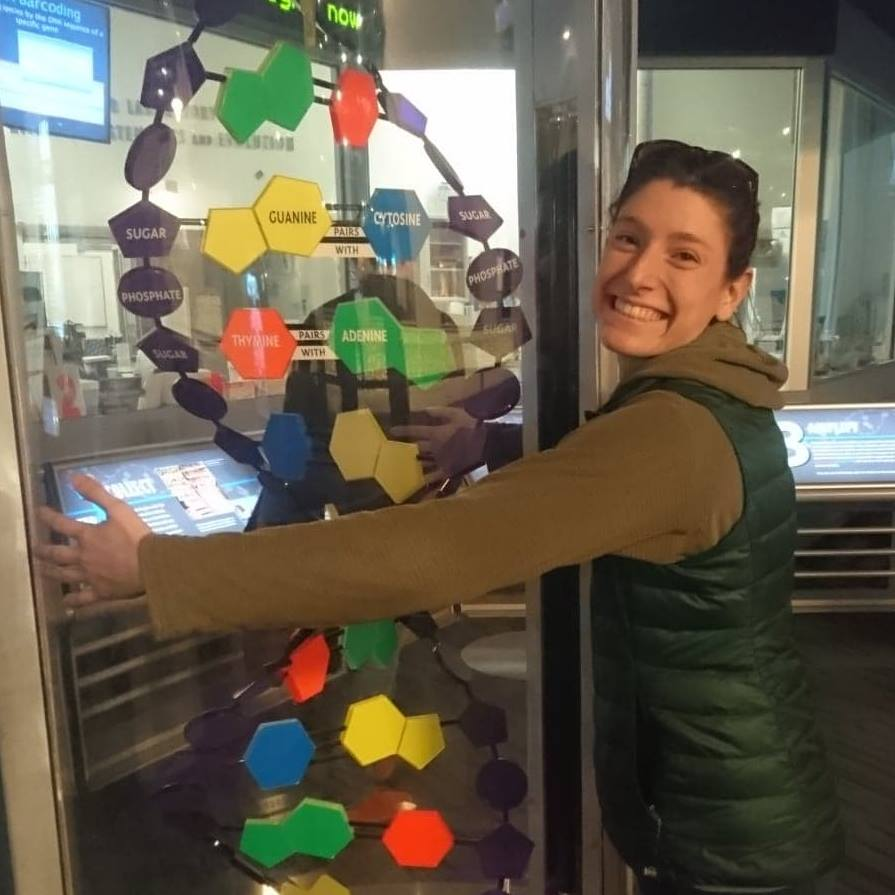
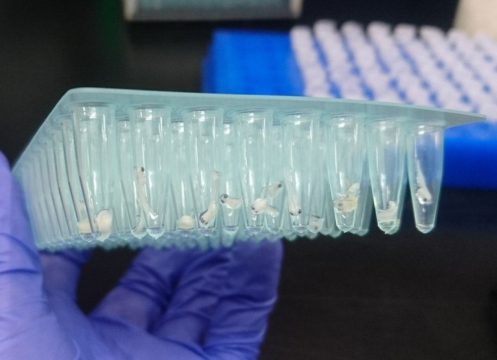
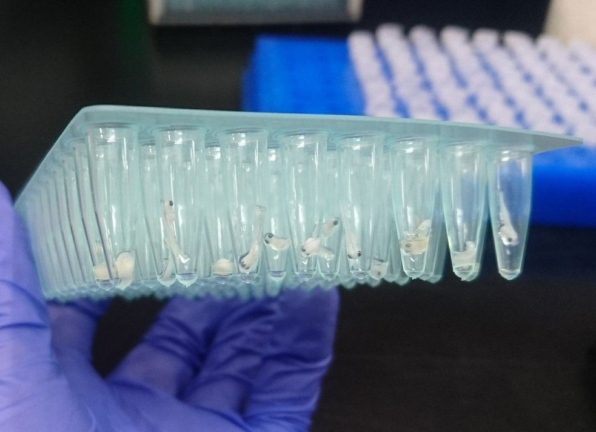

Danielle Blumstein, Ph.D. Student
I am a PhD student interested in genome evolution and adaptive diversity. My current research is focused on investigating the genomic basis of desert adaptations in desert mice (Peromyscus).
I started getting involved in research as an undergrad at Michigan State University where I worked in two research labs, one where I collected and analyzed genetic and ecological data for lake sturgeon (Acipenser fulvescens), burbot (Lota lota), and various aquatic invasive species and the other where I conducted field and greenhouse experiments to study the latitudinal biodiversty gradent. After completing my B.S. in zoology, I moved to the University of Wisconsin - Stevens Point and earned a M.Sc. in Natural Resources and developed a haploid linkage map for cisco (Coregonus artedi). While the main use of the linkage map will be to examine the cisco species complex and inland and Great Lakes population variation, I used the map to study how the salmonid family has genomically evolved post whole genome duplication.
 
